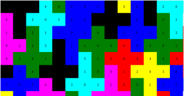

BAES Akira, Computer Science MA1
Rolling a Tesselation Polyhedron in its Tiling Net
This work is focused around regular-faced polyhedrons for which some nets are mosaics or tiling patterns.
A net of a polyhedron is the adjancement of its faces on a plane in a way that folding the net would reconstruct the polyhedron.
A tesselation
net is a net that can be used to tile (tesselate) the
plane.

We will now consider convex polyhedron which only have regular faces.
Those are the five Platonic solids wich are completely regluar, the 13
Archimedean solids, prisms and antiprisms, and 92 Johnson solids.
From those, it was shown that 23 have tesselation nets.
Those tesselations can be seen as an infinite grid of shapes filling
the space. My goal is to see how the polyhedron building the tiling can
roll in it.
Rolling
means that the polyhedron starts somewhere on its net, with its
corresponding face down. It then "rolls" to an adjacent polygon.
Not all tesselation polyhedron roll in the same patterns.
There are mainly three
types of patterns:
- Shapes that can roll in the full space
- Shapes that can roll in a "corridor"
- Shapes that cannot escape a given area
There are many ways to unfold a single polyhedron. By considering the
adjacent faces of a polyhedron as connected nodes, we can see each net
as a specific spanning tree.
Many such produced nets are identical due to the internal symmetries of
our polyhedrons. There are also symmetrical versions of each net that
can be removed.
Those nets can then be tested for tesselation. The process involves
sticking two versions of the net together, forming a bigger shape.
By sticking two shapes together, we can often tell early if it will
become a tesselation net or not: during the stiching, we fuse the edges
of the two shapes together, so if a side has an angle that goes inside
the shape, we know it will not work.
A tesselation can be represented very simply. Take this tesselation of
a cube for example:
If you look closely, each net is similarly attached to its neighbours.
This gives us a way to model a tesselation net, by indicating for each
side what face should be adjacent. By simply repeating that pattern we
can reproduce the whole tesselation.

Of course, two problems arise:
When a shape has twice the same neighbour, there is no way to tell from
which way the shapes are supposed to be attached.
When a shape has itself as a neighbour twice, it becomes hard to tell
from which way they are supposed to be attached.
Hence, instead of simply indicating the neighbour's face number, we add
a multiple of the amount of faces to differenciate directions.
We use:
len : amount of faces
- face ID : the net's internal ID
- attach ID: 0 if it's an internal link or if the face is attached to itself simply, k>0 if the face is leaving its net, different k if a face is attached several times to the same face
- attach sign: + and - to indicate the order of attach for shapes attached to themselves doubly
So the value used will be:
- tile ID = face ID + len * attach_id * attach sign
From this value we can find back the original values by doing
- face ID = abs(tile ID - (tile ID % len))
- attach ID = abs(floor( tile ID / len))
- attach sign = sign(tile ID)
When a face is attached to itself doubly, we can determine the direction it is attached to thanks to the opposite signs of the two links. See pyramidTesselation 0 where 0 is attached to both 0+len and 0-len. We can ignore the sign the rest of the time.
When a face is attached to itself simply, we ignore the attach ID or sign. See cubeTesselation 4 and 5.
When a face is attached to another face in the original net, we ignore attach ID or sign. See cubeTesselation 0.
Examples (the description of the polyhedrons are separate):
0: [1,2,4,3],
1: [0,2+len, 5, 5+len],
2: [0,5+len,1-p,3+len],
3: [0, 4+len, 4+2*len,2-len],
4: [0,3-2*len,3-len,4+0],
5: [5+0,2-len,1-len,1]
}
0: [1, 0-len, 3, 0+len],
1: [2,0,2+len],
2: [1,4+len,1-len],
3: [4,0,4+len],
4: [3,2-len,3-len]
}
There might be ways to build a tesselation net that doesn't fit this
representation (for examples patterns that would follow a central
symmetry), but I haven't encountered any so far in the tesselation nets.
Because I couldn't translate the original program's representation into
my own representation, I had to do it by hand. Thus, I only have a few
tesselations nets represented.
Here are the findings:
Rolling pattern:
- Dithered red: visited
- Solid red: visited with exact orientation (translation to the starting point)
- Dithered blue: starting point
- If a starting point is surrounded by solid red, by recursion it can cover the whole space.
- If a starting point is surrounded by dithered red but there exist solid red parts, it can cover the whole space by translation to the solid red parts.
| Polyhedron | Nets | Completion | Tesselation nets | Example of net | Example of tesselation | Rolling pattern |
|---|---|---|---|---|---|---|
| Tetrahedron | 3 | All No duplicate |
image | total | ||
| Cube | 11 | All No duplicate |
image | total | ||
| Octahedron | 11 | All No duplicate |
image | total coverage | ||
| Icosahedron | ||||||
| Hexagonal antiprism | ||||||
| Square pyramid (j1) | 8 | All No duplicate |
| image | band | |
| Elongated square pyramid (j8) | 448 | All No duplicate |
||||
| Gyroelongated square pyramid (j10) | 3421 | All No duplicate |
||||
| Triangular dipyramid (j12) | 8 | All No duplicate |
||||
| Pentagonal dipyramid (j13) | 98 | All No duplicate |
||||
| Elongated triangular dipyramid (j14) | 156 | All No duplicate |
image | band | ||
| Elongated square dipyramid (j15) | 2010 | All No duplicate |
||||
| Elongated pentagonal dipyramid (j16) | ||||||
| Gyroelongated square dipyramid (j17) | ||||||
| Augmented triangular prism (j49) | ||||||
| Biaugmented triangular prism (j50) | ||||||
| Triaugmented triangular prism (j51) | ||||||
| Snub disphenoid (j84) | 958 | All No duplicate |
||||
| Sphenocorona (j86) | image | total | ||||
| Augmented sphenocorona (j87) | ||||||
| Sphenomegacorona (j88) | ||||||
| Hebesphenomegacorona (j89) | ||||||
| Disphenocingulum (j90) |
{kind=link}
{kind=link}
{kind=link}
{kind=link}
{kind=link}
{kind=link}
{kind=link}
{kind=link}
{kind=link}
{kind=link}
{kind=link}
{kind=link}
--------Implementation:--------
The goal of this project was double:
1) Rewrite the code provided by my teacher which was used to determine
if a Polyhedron had a tileable net, to produce all tileable nets of one
Tesselation Polyhedron.
At this point of the project, I was unable to completely fullfill point 1.
2) Determine if the given tiling can be "rolled" into in order to "roll" on the whole plane, by rolling the Polyhedron into its faces on its nets.
At this point of the project, I can visually assess the rolling type.
In order to do 1) I simplified the set of the nets stiching I
was looking for. When testing, all tesselation found so far have been
symmetrical with each tile identical, meaning that they
-Contain translations and rotations, but no reflexion/mirroring
-Can be defined by the description of a single tile's neighbours, which
are then repeated to create the pattern.
If every tesselation possible with the given shapes can be represented
by this model is still an open question. (This model cannot represent
central symmetry, or non-periodic patterns)
A Regular-Faced Polyhedron can be represented as a dictionary
of faces and their adjacent faces:
0: [1,2,3,4],
1: [0,4,2],
2: [1,3,0],
3: [0,2,4],
4: [0,3,1]
}
Based on this, I represent a tile's pattern as:
0: [1,0-p,3,0+p],
1: [0,2+p,2],
2: [1,4+2*p,1-p],
3: [0,4-p,4],
4: [3+p,3,2-2*p]
}

Internal neighbours are the number of the adjacent face on the
net. External neighbours are differenciated by adding a multiple of p
being the number of sides of the polyhedron to the neighbour's number.
The multiple is used to show which adjacent shape is touching, in case
the same shape is several times a neighbour.
In case a shape is its own neighbour, the inverted sign of this
represent which side is linked.
This information is enough to create the tile pattern as we just have
to match the faces calling eachother by the sides that they call
eachother trough.
By limiting to tile pattern that fit this representation, it
would also simplify the research of tile patterns.
The original code extended a tile pattern randomly by stitching a tile
to a random side and checking for collisions on the touching sides
adjacent to the stitched side.
Each time we extend the pattern on one edge, we can also extend it on
its symmetrical edge (unless the two shapes are touching on the exact
same edge), reducing sensibly the research space.
We also reduce the tiling test requirement at until the starting
shape's sides are entirely covered, as any additional tile would be
symmetrical and redundant.
[TODO] Unfortunately I haven't been able to make the provided code output my own format of tesselation representations yet
I figured how to remove duplicate nets (by following the angles and comparing them in order and disorder for mirrors).size = len(path)
for t in oldpaths:
for start in range(size):
counter = 0
for i in range(1,size): #ignore the first orientation
if(path[i] != t[(start+i)%size]):
break
counter+=1
if(counter==size-1):
return False
if(mirrors==True):
for t in oldpaths:
for start in range(size):
counter = 0
for i in range(1,size):
if(path[i]!=t[(start-i)%size]):
break
counter+=1
if(counter==size-1):
return False
#print("Accepted path:",path)
return True
This part is in tileset_v2.py. It is still too slow to be useable on my computer, as I could only get partial results in 6+ hours for polyhedrons with more than 15 faces.
I could not rewrite the tesselation stiching part to keep in memory the faces it manipulates (the program ignores the faces and uses sides only).
Once we have possible tilings (which I produced manually), I run them trough my
visualisation script to verify that they are legitimate tile patterns
and if it fills the space.
The visualisation simply starts from one edge (one segment), and draws
clockwise the next shape.
Only one of the manipulated polyhedrons contains a different shape than
a triangle or a square (Hexagonal antiprism contains an hexagon).
To verify if the shape can be "rolled" into, we need to run
trough:
Each net face to polyhedron face configuration in each orientation
possible, symmetries included.
A branch ends if
-The face to polyhedron with the given orientation was already visited
-The polyhedron cannot roll into the given direction
We keep in memory where the re-visit happenned and visualise it to
check if the polyhedron can fill the space, or if it only fills a band
of space.
When we reach a place in the same orientation as the original orientaiton, we color it in solid red to show that this can be used for symmetries.
To determine if a roll can fill the whole space, I could probably check if the neighbouring nets are solid red. In that case, the whole space can be filled.
However sometimes the neighbours are in dithered red. Maybe I could use some symmetry properties of the polyhedrons to colore in solid red more areas at once.
Deliverables: rolltiles.zip
Contents:
tileset.py, which only generates nets ready to be tested for tesselation.
It uses the provided code to open polyhedron's .wrl, and save the net data in a .py format. It does not look for tesselations in those nets [todo].
shapesdraw.py, which only does part 2 (visualisation of a tile configuration) of a select few shapes that I manually encoded.
The search of tesselations in the nets is not in a useable state and is not included. I would need to build a second list containing the face to edge links, and complete it as the stiching removes edges.